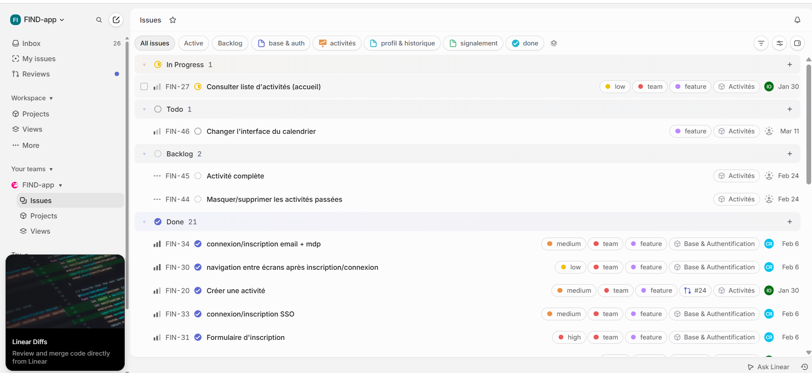
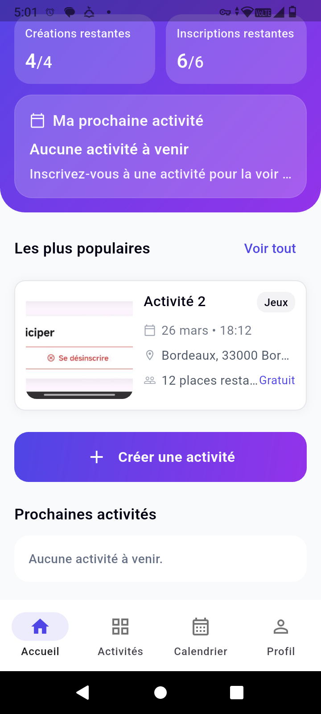
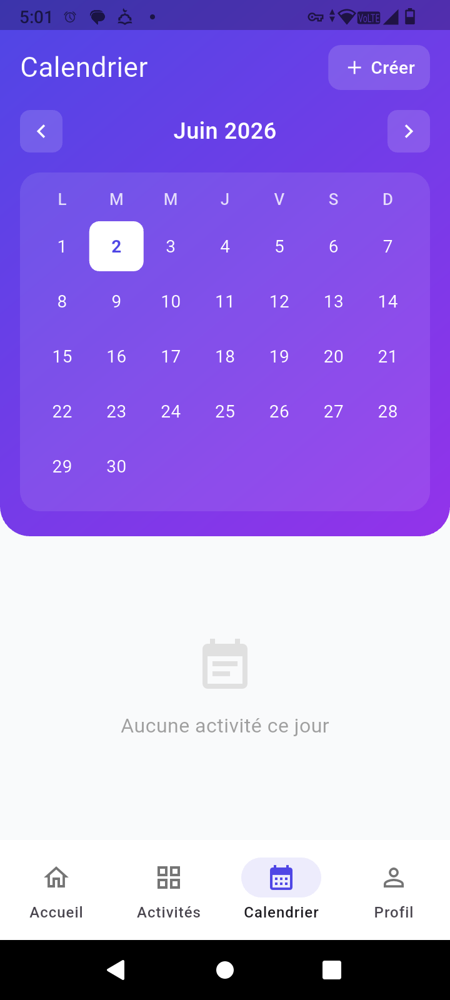
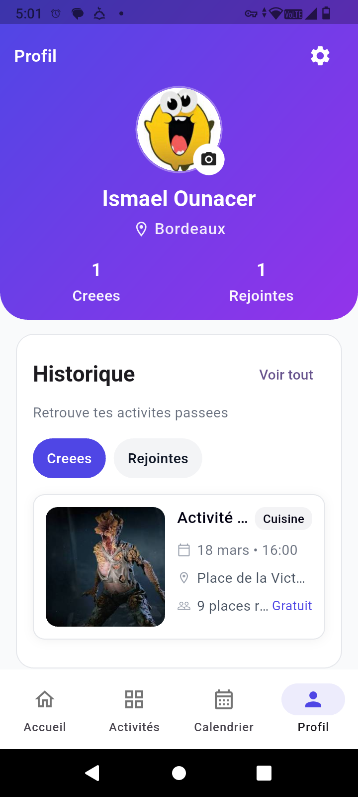
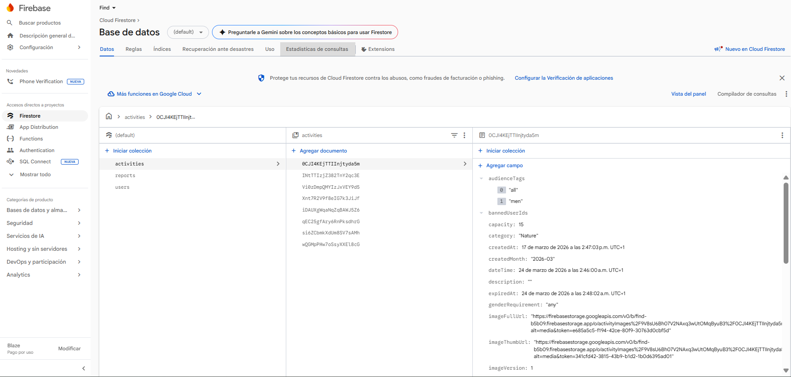

FindDécouverte d'activités en temps réel





Application mobile multiplateforme (Android & iOS) développée avec un camarade durant le dernier stage. Find permet à ses utilisateurs de découvrir des activités organisées près d'eux, d'y participer, de créer les leurs et de discuter avec les autres participants, le tout centré sur les rencontres en personne.
L'application utilise la géolocalisation pour afficher les activités à proximité, avec des filtres avancés (type, distance, date, capacité). Les utilisateurs disposent d'un profil, d'un historique de leurs participations, d'un système de chat par activité et d'un mécanisme de signalement.
Le backend repose entièrement sur Firebase : Firestore pour les données, Firebase Auth pour l'authentification, Firebase Storage pour les médias, et Cloud Functions v2 pour les tâches planifiées (expiration automatique des activités, recalcul des scores de popularité).
Architecture et fonctionnalités
- Gestion de projet en méthode Agile avec Linear (tickets, backlog, sprints)
- Pattern MVVM strict : views, viewmodels, services, models
- Gestion d'état par Cubit (flutter_bloc)
- Navigation déclarative via GoRouter
- Injection de dépendances via GetIt
- 11 services Firebase encapsulés dans la couche
services/ - Requêtes géospatiales Firestore avec GeoFlutterFire Plus
- Cloud Functions planifiées (expiration des activités toutes les 5 min)